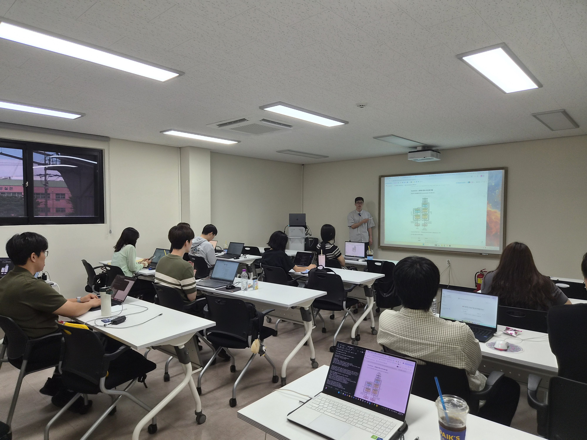
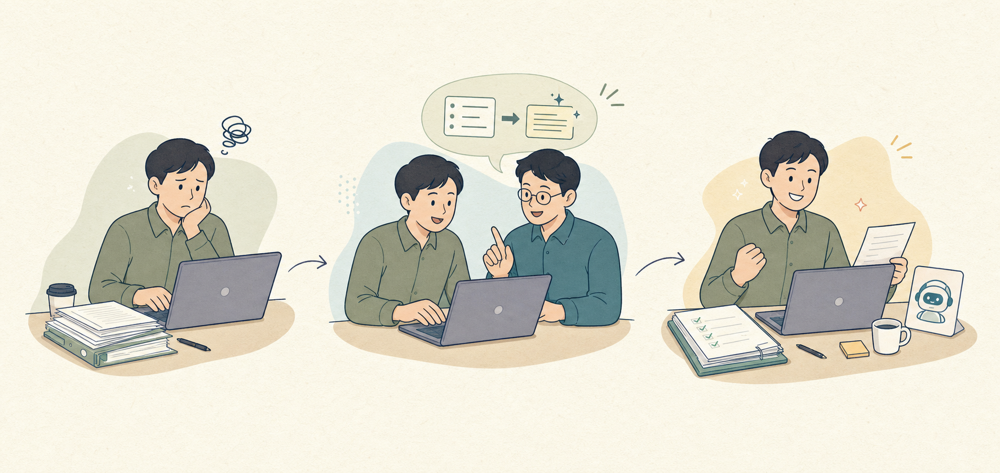
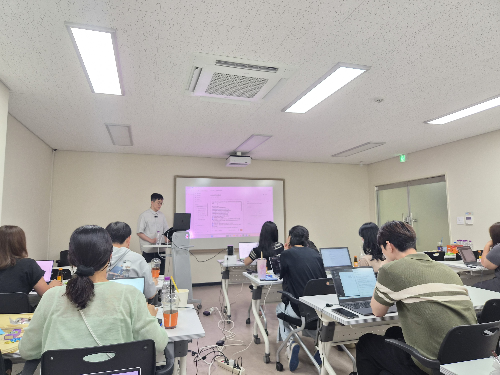

✦ AX RECIPE · 에이전트 구축
현장의 문제를,
실행하는 AI 에이전트로
연결합니다.
[AX 레시피 - 에이전트 구축] 현장의 문제를 해결하는 AI 에이전트 설계 및 구축 실무
클라우드 기반 실습 환경을 구성하고, 현장 업무를 에이전트 작업 단위로 설계한 뒤 직접 구축·검수·개선합니다. 권한과 보안, 공유·확산 운영까지 이틀 동안 완성합니다.
일정10.6.(화)–7.(수)
교육시간09:00–18:00
총 교육시간16시간 · 2일
환경 구성부터 구축·운영·확산까지 한 흐름으로 진행합니다.

직접 해보는 수업 설명을 듣고, 함께 따라 하고, 내 업무에 맞게 바꿉니다.
설계부터 운영까지 연결해요!
✓ 클라우드 실습 환경
✓ 현장 업무 설계
✓ 에이전트 구축·검수
✓ 권한·보안·확산
에이전트 실습 환경 구성
에이전트가 일할 공간과
업무 데이터 접근 구조를 준비합니다.
클라우드 기반 에이전트 실습을 위한 계정과 작업 환경을 구성합니다. 파일·문서·채널 등 업무 데이터에 접근하는 방식과 개인·공유·서버 실행 환경의 차이를 이해합니다.
- 01
계정과 작업 환경 구성클라우드 기반 실습을 위한 작업 공간을 준비합니다.
- 02
업무 데이터 접근파일·문서·채널의 접근 방식과 연동 구조를 이해합니다.
- 03
실행 환경 구분개인·공유·서버 실행 환경의 차이와 운영 방식을 확인합니다.

업무 데이터와 실행 환경을 연결할 준비를 마칩니다.
클라우드 기반 에이전트 구조
응답하는 AI를 넘어,
업무를 실행하는 구조를 이해합니다.
지시·참고 자료·도구·실행 흐름·산출물이 연결되는 방식을 파악하고, 에이전트에 위임할 업무와 사람이 직접 판단할 업무를 구분합니다.

02 · 구조 이해 지시와 자료, 도구, 실행 결과가 이어지는 흐름을 확인합니다.
단순한 답변이 아니라
지시 → 도구 → 실행 → 산출물을 연결합니다.
지시·자료→도구·실행→산출물·검수
16시간의 구축 흐름
환경을 구성하고, 설계하고,
구축해서 안전하게 운영합니다.
현장 문제를 실행 가능한 에이전트와 운영 기준으로 연결합니다.
- 01환경 구성계정·작업 공간·데이터 접근
- 02구조 이해지시·자료·도구·실행 흐름
- 03업무 설계목적·입력·기준·출력
- 04에이전트 구축자료와 도구 연결·테스트
- 05검수·개선품질 기준과 실패 대응
- 06권한·확산보안·배포·운영 정책
세부 커리큘럼 · 총 16H
이틀 동안 에이전트의
설계·구축·운영을 연결합니다.
과정을 누르면 각 단계에서 구성하고 실습하는 내용을 확인할 수 있습니다.
✦교육 목표현장 업무를 에이전트 작업 단위로 설계하고 직접 구축한 뒤, 실행·검수·개선과 권한·보안·확산 운영 체계를 완성합니다.
- 012H
DAY 1 · 09:00–10:50에이전트 실습 환경 구성+
클라우드 기반 실습을 위한 작업 공간과 접근 환경을 준비합니다.
- 계정과 작업 환경 구성
- 파일·문서·채널 등 업무 데이터 접근 방식과 연동 구조 이해
- 개인·공유·서버 실행 환경의 차이와 운영 방식 이해
- 023H
DAY 1 · 11:00–14:50클라우드 기반 에이전트 구조 이해+
구성요소와 동작 원리를 파악하고 사람과 에이전트의 역할을 구분합니다.
- 단순 AI 응답 도구와 자율 실행 에이전트의 구조적 차이
- 지시·참고 자료·도구·실행 흐름·산출물의 연결 방식
- 에이전트에 위임할 업무와 사람이 판단할 업무 구분
- 현장 업무 에이전트 설계의 핵심 구성요소 파악
- 033H
DAY 1 · 15:00–18:00현장 업무 에이전트 설계+
반복 업무를 재사용 가능한 에이전트 작업 단위로 변환합니다.
- 업무를 목적·입력·처리 기준·출력 형식으로 분해
- 문서 작성·정보 정리·내부 응대 등 업무 흐름 설계
- 명확한 지시와 모호한 지시의 결과 비교·개선
- 재사용 가능한 업무 템플릿과 사람 검토 지점(HITL) 구성
- 043H
DAY 2 · 09:00–12:00에이전트 구축 실습+
진단한 현장 문제를 해결하는 에이전트를 직접 구축합니다.
- 참고 자료·도구·실행 조건 연결
- 실제 업무 데이터로 동작 테스트 및 결과 검토
- 의도대로 작동하지 않는 구간 파악 및 개선
- 053H
DAY 2 · 13:00–15:50실행·검수·개선 운영 체계+
요청부터 최종 산출까지 에이전트 운영 흐름을 설계합니다.
- 요청·실행·결과 확인·보완·최종 산출 흐름 설계
- 산출물 품질 기준과 검수 방법 정리
- 오류·누락·맥락 오해 등 실패 유형별 대응 방식 마련
- 062H
DAY 2 · 16:00–18:00권한·보안·확산 관리+
거버넌스와 배포 운영 구조를 구성합니다.
- 업무 역할별 접근 범위와 권한 설정
- 승인·검토 지점과 오남용 방지 기준 수립
- 클라우드 환경의 공유·배포 운영 구조 이해
- 부서 확산을 위한 운영 정책과 관리 기준 정리
교육 운영 일정
이틀 동안 에이전트의
설계와 운영을 완성합니다.
2026년 10월 6일 화요일부터 7일 수요일까지, 매일 오전 9시부터 오후 6시까지 진행됩니다.
DAY 1설계
실습 환경 구성 · 구조 이해 · 현장 업무 에이전트 설계
- 교육시간09:00–18:00
- 점심시간12:00–13:00
DAY 2구축·운영
에이전트 구축 · 실행·검수·개선 · 권한·보안·확산
- 교육시간09:00–18:00
- 점심시간12:00–13:00
교육 장소서울특별시 동대문구 회기로 47 글로벌지식협력단지 교육동 3층 재스민실
※ 총 16시간 · 강사: 김동현
신분증 필수 지참
본인 확인을 위해 실물 신분증 또는 모바일 신분증을 반드시 지참해 주세요. 신분증 사진·화면 캡처·명함 등은 인정되지 않습니다.
개인 노트북
교육 실습을 위해 개인 노트북을 지참해 주세요.
교육 결과
작동하는 에이전트와
운영 기준을 함께 완성합니다.
01에이전트 업무 설계반복 업무를 목적·입력·기준·출력 형식으로 구조화합니다.
02현장 문제 해결 에이전트자료와 도구를 연결하고 실제 업무 데이터로 시험합니다.
03검수·개선 운영 흐름품질 기준과 실패 유형별 대응 방식을 정리합니다.
04권한·보안·확산 기준승인 지점과 접근 권한, 공유·배포 정책을 설계합니다.